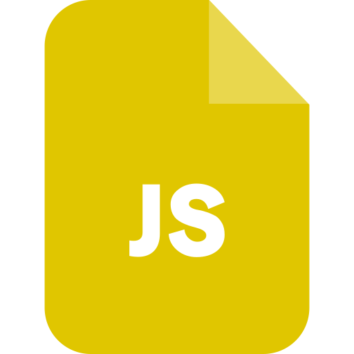
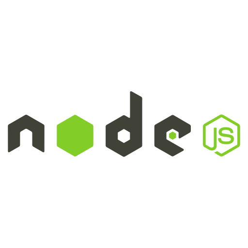
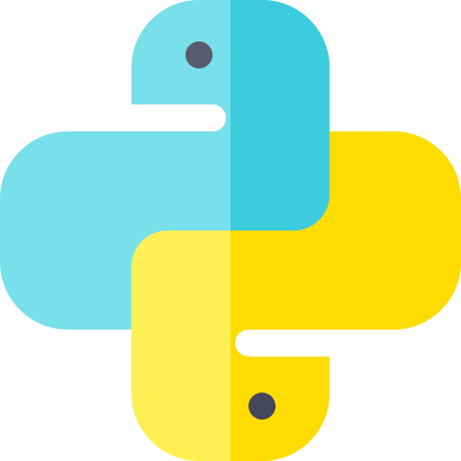
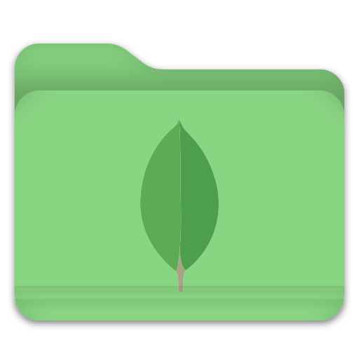

Tecnologia para empresas e setor público
Tecnologia para avançar com confiança.
Software, IA e automação sob medida para empresas e instituições.
CNPJ ativo
Atendimento nacional
Projetos sob medida
EXP / 2026
Engenharia digital orientada a resultado.
01 Quem somos
Estratégia, tecnologia e execução no mesmo time.
Transformamos demandas reais em soluções digitais seguras e fáceis de operar.
Do diagnóstico ao suporte, conduzimos cada etapa com clareza e responsabilidade.
02 Serviços
Da estratégia ao suporte
Tecnologia para cada etapa da sua operação.
Projetamos, implantamos e acompanhamos soluções digitais com escopo claro e atendimento próximo.
01
Software sob medida
Sistemas e painéis criados para a operação real do seu negócio.
Discutir projeto02
Aplicativos e produtos digitais
Experiências mobile e web rápidas, integradas e intuitivas.
Planejar produto03
Automação e integrações
Menos tarefas repetitivas, mais controle e produtividade.
Mapear processos04
IA aplicada
Assistentes e recursos inteligentes conectados ao seu fluxo.
05
Cibersegurança
Diagnóstico, prevenção e proteção de dados, acessos e sistemas.
Avaliar segurança06
Sites e portais
Presença digital clara, rápida e preparada para converter.
Fortalecer presença07
Help Desk e suporte técnico
Atendimento remoto, triagem de chamados e apoio aos usuários.
Solicitar suporte08
Dados e infraestrutura
Bancos de dados, implantação, monitoramento e continuidade.
Planejar infraestrutura03 Tecnologias
Stack moderna e versátil
Ferramentas escolhidas para cada desafio.
Combinamos tecnologias consolidadas para criar produtos rápidos, seguros e fáceis de evoluir.
01
Experiência digital
Front-end
 HTML5
HTML5 CSS3
CSS3
JavaScriptTSTypeScriptVUVue.jsReactTWTailwind CSSBSBootstrap02
Sistemas e integrações
Back-end e APIs

Node.js
PythonEXExpressAPAPIs RESTWHWebhooksAIAPIs de IA03
Persistência e entrega
Dados e nuvem
PGPostgreSQL MySQL
MySQL
MySQL
MongoDBSBSupabaseVEVercelGitHubA stack é definida pelo objetivo, pela segurança e pela sustentabilidade do projeto.
04 Editais e licitações
Contratação com segurança
Prontos para demandas formais e estratégicas.
Analisamos requisitos, riscos e prazos para construir propostas técnicas consistentes.
Falar com o setor comercialAnálise do instrumento
Leitura técnica do objeto, requisitos, prazos, critérios e riscos de execução.
Proposta técnica
Estratégia de solução, cronograma, arquitetura, premissas e modelo de entrega.
Execução documentada
Acompanhamento por marcos, comunicação objetiva e evidências de evolução.
Suporte e continuidade
Implantação assistida, garantia, manutenção e evolução conforme contrato.
05 Nossa equipe
Pessoas por trás da entrega
Liderança próxima, visão técnica e foco no usuário.
Estratégia, tecnologia e relacionamento trabalhando juntos em cada projeto.
Direção executiva
CEO Executivo e Fundador
Alex Almeida
Lidera estratégia, inovação e desenvolvimento de negócios, transformando objetivos em soluções digitais viáveis e escaláveis.Relacionamento e UX
Psicólogo e Diretor de Relacionamento, Requisitos e UX
Marlon Amorim
Conduz descoberta, requisitos e validações, aproximando pessoas e tecnologia para criar soluções intuitivas e alinhadas ao negócio.Tecnologia e arquitetura
CTO | Diretor de Tecnologia
Marx Vinicius
Lidera arquitetura, engenharia e evolução tecnológica, dos requisitos à implantação de sistemas, APIs, dados e infraestrutura.06 Portfólio
Projetos publicados
Soluções digitais em operação e evolução.
Acesse sites entregues e repositórios de produtos desenvolvidos pela equipe.
07 Próximo passo
Canal comercial
Seu desafio pode ser o nosso próximo projeto.
Solicite uma proposta ou apresente uma oportunidade.